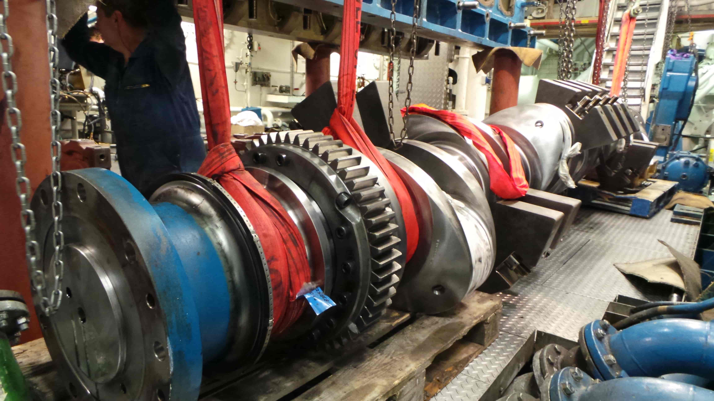

Судовые двигатели типа NVD.
Тенденции развития
Дизели SKL типов NVD 48-2U и NVD 48A-2U — четырехтактные, бескомпрессорные, однорядные, простого действия, реверсивные, с непосредственным впрыском топлива, оборудованные газотурбонагнетателем для наддува. Эти двигатели изготовляются с шестью и восьмью цилиндрами, выполнены по блочному принципу из унифицированных элементов конструкции.
Фундаментная рама — цельная, отлита из серого чугуна. Коренные подшипники имеют стальные вкладыши, залитые баббитом. Вкладыши закрыты чугунными крышками, крепящимися на раме двумя шпильками. На двигателях последних выпусков устанавливаются тонкостенные вкладыши с гальваническим покрытием, в которых работают «мягкие» (незакаленные) шейки коленчатого вала.
Дизели типа NVD 48-2U и NVD 48A-2U (6—8 ЧР32/48)
Тонкостенные вкладыши подшипников имеют большой срок службы, который тем больше, чем тоньше слой гальванического покрытия. Нижняя часть фундаментной рамы выполнена в виде маслосборника, перекрытого стальными листами. Такая конструкция маслосборника препятствует свободному движению масла в фундаментной раме и попаданию в масло больших инородных тел.
Дизели SKL типов NVD 48-2U и NVD 48A-2U — четырехтактные, бескомпрессорные, однорядные, простого действия, реверсивные, с непосредственным впрыском топлива, оборудованные газотурбонагнетателем для наддува. Эти двигатели изготовляются с шестью и восьмью цилиндрами, выполнены по блочному принципу из унифицированных элементов конструкции.
Фундаментная рама — цельная, отлита из серого чугуна. Коренные подшипники имеют стальные вкладыши, залитые баббитом. Вкладыши закрыты чугунными крышками, крепящимися на раме двумя шпильками. На двигателях последних выпусков устанавливаются тонкостенные вкладыши с гальваническим покрытием, в которых работают «мягкие» (незакаленные) шейки коленчатого вала.
Тонкостенные вкладыши подшипников имеют большой срок службы, который тем больше, чем тоньше слой гальванического покрытия. Нижняя часть фундаментной рамы выполнена в виде маслосборника, перекрытого стальными листами. Такая конструкция маслосборника препятствует свободному движению масла в фундаментной раме и попаданию в масло больших инородных тел.
Первый и второй коренные подшипники выполнены так же, как упорные.
Блок цилиндров изготовлен из чугуна и соединяется с фундаментной рамой анкерными связями, которые создают жесткое соединение обеих частей остова и воспринимают усилия газов сгорания, передаваемые на коленчатый вал через поршень и шатун.
Втулки цилиндров изготовлены из легированного чугуна центробежным способом литья. Сменные втулки вставлены в блок цилиндров и уплотняются сверху пришлифованным буртом, а в нижней части — двумя резиновыми уплотнительными кольцами Верхнее кольцо предотвращает щелевую коррозию на блоке цилиндров, а нижнее уплотняет водяную рубашку. При таком виде уплотнения втулка цилиндров может растягиваться по длине при нагреве. Втулки омываются циркулирующей снизу вверх охлаждающей водой. Крышки цилиндров изготовлены из серого чугуна, отдельные для каждого цилиндра. Они устанавливаются на цилиндровых втулках и уплотняются с помощью плоской медной проволоки, размещенной между втулкой и крышкой цилиндра. В крышке устанавливаются впускной, выпускной и пусковой клапаны и форсунка. Вода, протекающая из блока цилиндров, направляется через крышку цилиндра и, благодаря удачной конструкции водяных каналов, интенсивно охлаждает днище крышки.
Дизель NVD 48-2U (поперечный разрез):
- коленчатый вал;
- фундаментная рама;
- противовзрывной клапан;
- терморегулятор;
- водяной охладитель;
- маслоохладитель;
- блок цилиндров;
- выхлопной коллектор;
- крышка цилиндра;
- форсунка;
- привод клапанов;
- пусковой клапан;
- всасывающий коллектор;
- втулка цилиндра;
- поршень;
- пост управления;
- топливный насос;
- распределительный вал;
- шатун
Дизели типа NVD 48-2U и NVD 48A-2U (6—8 ЧР32/48)
Дизели SKL типов NVD 48-2U и NVD 48A-2U — четырехтактные, бескомпрессорные, однорядные, простого действия, реверсивные, с непосредственным впрыском топлива, оборудованные газотурбонагнетателем для наддува. Эти двигатели изготовляются с шестью и восьмью цилиндрами, выполнены по блочному принципу из унифицированных элементов конструкции.
- Фундаментная рама — цельная, отлита из серого чугуна. Коренные подшипники имеют стальные вкладыши, залитые баббитом. Вкладыши закрыты чугунными крышками, крепящимися на раме двумя шпильками. На двигателях последних выпусков устанавливаются тонкостенные вкладыши с гальваническим покрытием, в которых работают «мягкие» (незакаленные) шейки коленчатого вала.
- Тонкостенные вкладыши подшипников имеют большой срок службы, который тем больше, чем тоньше слой гальванического покрытия. Нижняя часть фундаментной рамы выполнена в виде маслосборника, перекрытого стальными листами. Такая конструкция маслосборника препятствует свободному движению масла в фундаментной раме и попаданию в масло больших инородных тел.
- Втулки цилиндров изготовлены из легированного чугуна центробежным способом литья.
- Сменные втулки вставлены в блок цилиндров и уплотняются сверху пришлифованным буртом, а в нижней части — двумя резиновыми уплотнительными кольцами Верхнее кольцо предотвращает щелевую коррозию на блоке цилиндров, а нижнее уплотняет водяную рубашку.
- При таком виде уплотнения втулка цилиндров может растягиваться по длине при нагреве.
- Втулки омываются циркулирующей снизу вверх охлаждающей водой. Крышки цилиндров изготовлены из серого чугуна, отдельные для каждого цилиндра.
- Они устанавливаются на цилиндровых втулках и уплотняются с помощью плоской медной проволоки, размещенной между втулкой и крышкой цилиндра. В крышке устанавливаются впускной, выпускной и пусковой клапаны и форсунка. Вода, протекающая из блока цилиндров, направляется через крышку цилиндра и, благодаря удачной конструкции водяных каналов, интенсивно охлаждает днище крышки.
Анализ современного состояния судостроения в России с использованием бенчмаркинга
| Вид экономической деятельности / Год | 2012 | 2012 | 2012 | 2012 | 2012 | 2012 |
|---|---|---|---|---|---|---|
| Обрабатывающие производства | 13,63 | 16,79 | 7,67 | 13,63 | 16,79 | 13,63 |
| Добыча полезных ископаемых | 9,44 | 13,63 | 9,44 | 16,79 | 9,44 | 7,67 |
| Строительство | 7,67 | 9,44 | 13,63 | 7,67 | 13,63 | 9,44 |
| Торговля оптовая и розничная | 16,79 | 7,67 | 16,79 | 16,79 | 7,67 | 13,63 |
Тонкостенные вкладыши подшипников имеют большой срок службы, который тем больше, чем тоньше слой гальванического покрытия. Нижняя часть фундаментной рамы выполнена в виде маслосборника, перекрытого стальными листами. Такая конструкция маслосборника препятствует свободному движению масла в фундаментной раме и попаданию в масло больших инородных тел.
Дизели SKL типов NVD 48-2U и NVD 48A-2U — четырехтактные, бескомпрессорные, однорядные, простого действия, реверсивные, с непосредственным впрыском топлива, оборудованные газотурбонагнетателем для наддува. Эти двигатели изготовляются с шестью и восьмью цилиндрами, выполнены по блочному принципу из унифицированных элементов конструкции.